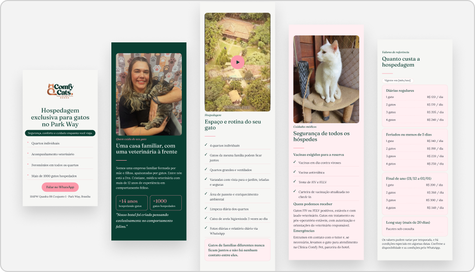
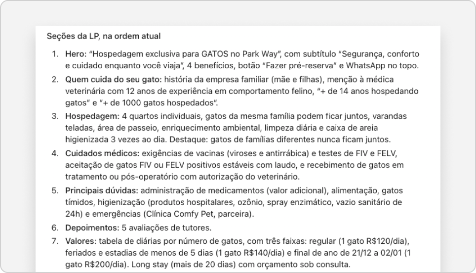
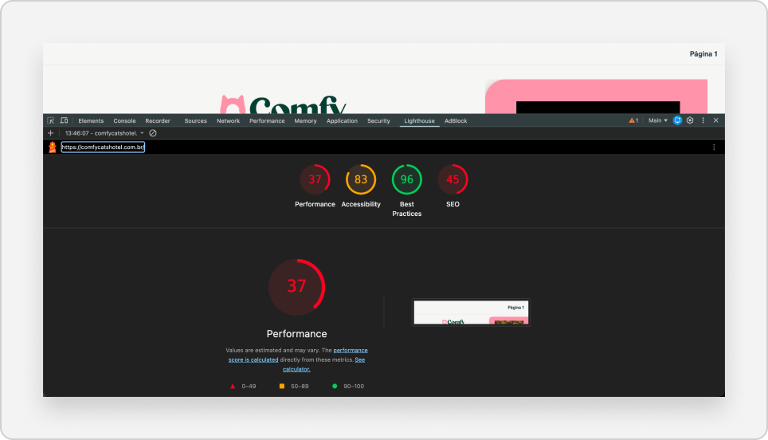
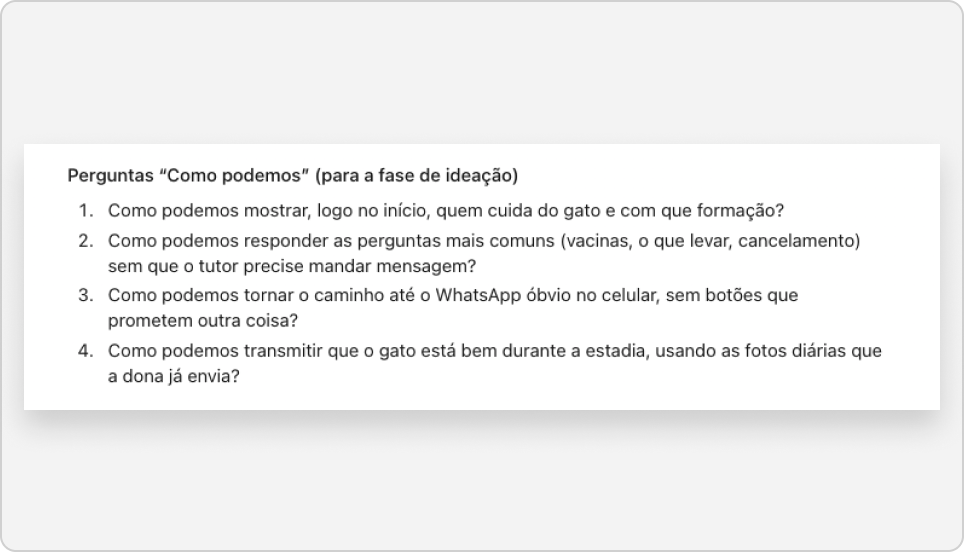
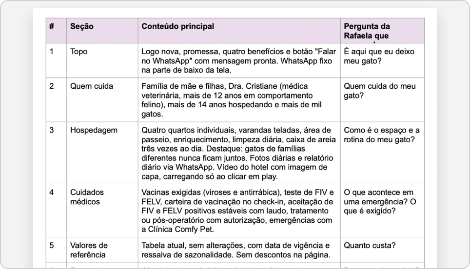
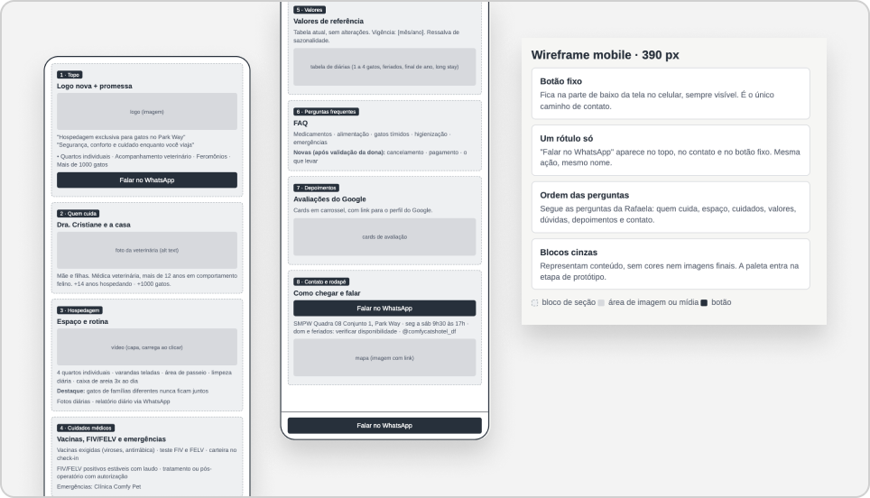
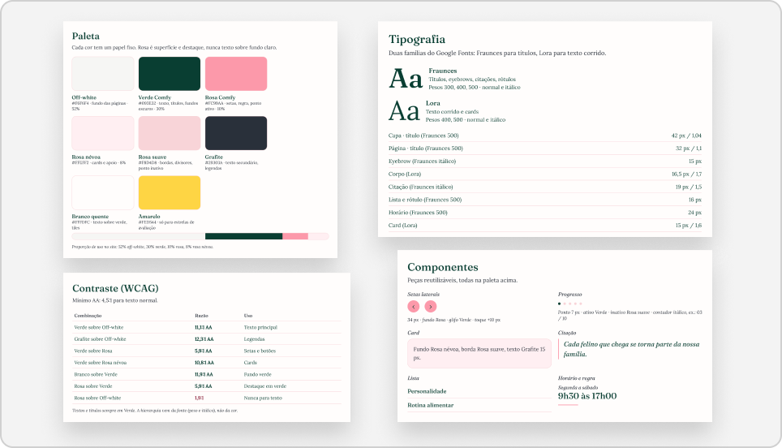

CASE 1 · COMFY CATS HOTEL · 2026
Redesign de uma landing page com IA
Do diagnóstico à produção em 1,5 dia de trabalho
- Função
- Designer de produto e front-end (projeto solo)
- Empresa
- Petry Design
- Cliente
- Comfy Cats Hotel Boutique Felina (projeto voluntário)
- Duração
- 1,5 dia com IA
- 1,5 dia
- Tempo de trabalho com IA, do diagnóstico à publicação
- 37 → 96
- Desempenho no celular, medido no Lighthouse, antes e depois
- 8,4 s → 1,5 s
- Tempo para o maior elemento aparecer no celular
Resumo em 30 segundos
Problema
A landing page do hotel, principal porta de entrada para novos tutores, mostrava informações divergentes, tinha um caminho de contato confuso e não funcionava bem no celular.
O que fiz
Conduzi o redesign sozinha, com a IA como apoio, seguindo o Double Diamond: inventário, auditorias, proto persona, arquitetura, wireframe, guia de estilo, mockups no Figma e código em HTML, CSS e JavaScript.
Resultado
Desempenho no celular de 37 para 96, acessibilidade de 83 para 100 e maior elemento em 1,5 s (antes 8,4 s), em 1,5 dia de trabalho e com aprovação da cliente antes de ir para produção.
A solução
Uma landing page mobile first que responde às dúvidas do tutor na ordem em que ele decide
Oito blocos, do topo com a promessa e o WhatsApp até o contato, com um único caminho para falar com o hotel e um botão fixo no celular. As informações divergentes foram corrigidas, e a página ficou leve e acessível.
O site foi aprovado pela cliente e está em produção.



Decisões-chave
Ordenar a página pelas perguntas da persona
- Em vez de
- Manter a ordem das nove seções da página antiga.
- Por quê
- A tutora decide primeiro por quem cuida e como é o espaço, e só depois olha o que é exigido e quanto custa.
- Resultado
- As dúvidas mais importantes são respondidas logo no início, com pouca rolagem.
Um único botão de WhatsApp, fixo no celular
- Em vez de
- Dois botões com nomes diferentes, “Fazer pré-reserva” e “Mais informações”, para a mesma ação.
- Por quê
- O caminho de contato era confuso, e no celular não havia nenhum contato sempre visível.
- Resultado
- Um único caminho até o WhatsApp, visível em qualquer ponto da página.
Vídeos que só carregam ao clicar em play
- Em vez de
- Carregar os vídeos junto com a página.
- Por quê
- A página antiga pesava cerca de 9 MB e o maior elemento levava 8,4 s para aparecer no celular.
- Resultado
- Contribuiu para o desempenho no celular passar de 37 para 96.
Visão geral e desafio
A Comfy Cats Hotel Boutique Felina, em Brasília, tinha uma landing page que era a principal porta de entrada para novos tutores. Mas ela mostrava informações divergentes, tinha um caminho de contato confuso e não funcionava bem no celular.
O desafio foi tornar a página clara e confiável em poucos minutos de leitura, para que o tutor que precisa viajar entenda como deixar o gato com segurança, sem precisar perguntar tudo pelo WhatsApp, e mudando o mínimo possível no conteúdo.
Meu papel
Como designer de produto, conduzi o redesign do começo ao fim, do diagnóstico à publicação. Aprovei cada fase antes de avançar: descoberta, definição do problema e das métricas, arquitetura da página, layouts no Figma e código em HTML, CSS e JavaScript.
Meu foco foi transformar um conteúdo confuso em uma página que responde às dúvidas do tutor no celular, na ordem de importância, e medir o resultado com o Lighthouse antes e depois. Usei a IA como apoio em análise, documentos, código e medição, mas as decisões de design, o escopo e a aprovação ficaram comigo.
Processo
Segui o Double Diamond. No primeiro diamante, entendi o problema antes de propor qualquer solução. No segundo, criei e entreguei a solução. Trabalhei uma fase por vez, e cada uma só avançou depois da minha aprovação.
A IA esteve presente em todo o processo, como apoio e não como decisora. Ela ajudou a organizar o inventário e as auditorias, a estruturar a definição do problema, a montar a arquitetura da página, a gerar o código e a medir o resultado. As escolhas de escopo, de conteúdo e de design ficaram comigo. Cada fase gerou um registro com objetivo, método, decisões e insights, e esses registros formam a base deste case.
Publiquei a primeira versão em ambiente de teste, apresentei para a cliente, que aprovou, e só então levei o site para produção.
Atividades
A seguir, algumas das atividades e etapas que realizei ao longo deste case.
Inventário do Conteúdo
Antes de desenhar, listei as nove seções da página atual, na ordem em que aparecem, com o que cada uma trazia: textos, botões, números e contatos. O levantamento mostrou o que devia ser mantido, o que estava errado e o que estava repetido. Foi aí que encontrei um número de WhatsApp com um dígito trocado no topo da página, e dois botões, “Fazer pré-reserva” e “Mais informações”, com nomes diferentes, mas a mesma ação.Auditoria heurística e de mobile
Avaliei a página com base em heurísticas de usabilidade e na experiência no celular. O layout não se adaptava ao celular: era um poster reduzido, com textos pequenos demais em depoimentos, valores e contato. Encontrei três problemas de prioridade alta: dois botões com nomes diferentes para a mesma ação, nenhum contato fixo no celular e um horário no rodapé diferente do confirmado. Também identifiquei dois de prioridade média: excesso de estímulos visuais e falta de informações que o tutor procura, como o que levar e a política de cancelamento.



Auditoria técnica de acessibilidade, desempenho e SEO
Medi a página atual com o Lighthouse, no celular e no computador, para ter uma linha de base antes de qualquer mudança. No celular, o desempenho era 37 e o peso da página chegava a cerca de 9 MB. O maior elemento só aparecia após 8,4 segundos, e o tempo de bloqueio da página somava 1.060 ms. A acessibilidade estava em 83, com imagens sem texto alternativo, links sem nome claro e alvos de toque pequenos. No SEO, a nota era 45: um cabeçalho do servidor e uma configuração do Canva impediam que o Google indexasse o site.Análise de Concorrentes
Analisei três hotéis para gatos fora do Brasil, a partir de sites públicos. A Boutique Cat Resorts, na Austrália, mostra o vínculo com a veterinária e avalia a saúde do gato na chegada. A Mission Cats, nos Estados Unidos, mantém o tutor informado com texto, vídeo e fotos, e deixa o depósito e a política de cancelamento na página inicial. Já a Cats Luv Us não mostra contato, preços nem políticas, e parece mais um guia de conteúdo do que um lugar para reservar.
O achado que mais orientou o redesign foi este: todos se apresentam como exclusivos para gatos, mas a confiança vem de mostrar preço, quem cuida, política de cancelamento e regras claras.


Proto Persona
Criei a Rafaela, uma proto persona de 36 anos, gerente de projetos em Brasília, tutora de um gato adulto e viajante frequente. Ela decide rápido, pelo celular, e quer saber o essencial sem ligar para vários lugares. Essa persona é uma hipótese, construída a partir da auditoria e das respostas da cliente, e ainda precisa ser validada com três a cinco tutores reais.Declaração do Problema
Tutores que precisam viajar, como a Rafaela, querem deixar o gato em um lugar seguro e confiável. Mas a página atual mostra informações divergentes, tem um caminho de contato confuso e não funciona bem no celular. Isso obriga o tutor a perguntar tudo pelo WhatsApp ou a desistir da reserva.Perguntas “Como podemos” (HMW)
A partir da declaração, formulei quatro perguntas para orientar a solução: como mostrar logo no início quem cuida do gato; como responder às dúvidas mais comuns sem exigir mensagem; como tornar o caminho até o WhatsApp óbvio no celular; e como transmitir que o gato está bem, usando as fotos diárias que a cliente já envia.



Métricas de Sucesso
Defini oito métricas, cada uma com linha de base e meta. Entre elas estão as mensagens recebidas por semana, a queda de perguntas repetidas, o tempo do maior elemento no celular e as notas do Lighthouse.Escopo
No obrigatório, ficaram a landing page única, o layout mobile first, um único número de WhatsApp e um único horário, o botão fixo no celular, e as metas de desempenho, acessibilidade e SEO. No desejável, ficaram o mapa com link, a galeria com fotos reais, se houver autorização, e as capas nos vídeos. Ficaram fora o blog, o formulário de reserva, o pagamento online, a automação de WhatsApp, o analytics e a reescrita geral dos textos.Arquitetura em 8 Blocos
Organizei a página em oito blocos, na ordem em que o tutor precisa das respostas: topo com promessa e WhatsApp, quem cuida, hospedagem, cuidados médicos, valores, perguntas frequentes, depoimentos e contato. Essa ordem segue as perguntas da persona: primeiro quem cuida e como é o espaço, depois o que é exigido e quanto custa.


Wireframe Mobile
Antes de definir cores e fontes, desenhei o wireframe mobile em baixa fidelidade, para testar a ordem da informação no celular. O objetivo era responder às dúvidas mais importantes logo no início, com pouca rolagem, e deixar um único caminho até o WhatsApp.Guia de Estilo
Criei um guia de estilo próprio para a página, com a mesma paleta e as mesmas fontes do guia do tutor, para que o site e os materiais do hotel fiquem coerentes. A paleta tem papéis fixos: o verde para textos e títulos, o rosa para destaques e setas, e o off-white como fundo. Todas as combinações de texto passam no nível AA de contraste, e o rosa nunca aparece como texto sobre fundo claro. A tipografia usa Fraunces nos títulos e Lora no texto corrido.




Mockups no Figma
Transformei o wireframe em layouts de alta fidelidade no Figma, para celular (390 px) e computador (1200 px), usando a paleta e a tipografia do guia de estilo. A logo nova entrou como imagem, sem recoloração.Protótipo Responsivo
A partir dos mockups, criei um protótipo responsivo para validar o comportamento da página em diferentes telas, como a navegação, o botão fixo de WhatsApp e os vídeos que só carregam ao clicar em play.Entrega
Publiquei a primeira versão em um ambiente de teste no Netlify, para conferir se o layout final batia com os mockups. Depois apresentei o resultado à cliente, que aprovou, e só então levei o site para produção. O site está no ar em marimeirelles.github.io/comfycatshotel. O código, em HTML, CSS e JavaScript puros, foi feito com apoio da IA e revisado por mim, e está disponível no GitHub.
Por enquanto, a indexação pelo Google segue desativada, até que a cliente valide os textos. Assim, o SEO aparece como pendente neste case.
Resultados
O que o meu trabalho causou
Desempenho e acessibilidade no celular
O desempenho passou de 37 para 96, e a acessibilidade, de 83 para 100. Esses números são da versão em produção e atendem às metas definidas na fase de Define.
Carregamento e SEO
O maior elemento da página passou a aparecer em 1,5 segundo, contra 8,4 segundos antes. A nota de SEO está em 63, abaixo da meta, porque a indexação pelo Google só será liberada depois que a cliente validar os textos.
Tempo de trabalho
O projeto levou 1,5 dia com IA. Sem IA, a estimativa é de 2 semanas.
O que aconteceu com o projeto
Aprovado e em produção
A cliente aprovou a versão de teste, e o site está no ar. A indexação pelo Google aguarda a validação dos textos pela cliente.
Aprendizados
Medir antes de afirmar
Nas primeiras versões das medidas do protótipo, a IA estimou posições e tamanhos sem conferir. Só corrigi depois de medir o PDF. Desde então, toda afirmação sobre o site passou por uma medição: o Lighthouse antes e depois, e a conferência do layout contra os mockups.
O inventário encontra o que ninguém procura
Ao listar cada seção da página atual, encontrei um número de WhatsApp com um dígito trocado no topo, que era o principal canal de reserva. Esse tipo de erro some na rotina, e só aparece quando alguém lista tudo.
A IA acelera, a decisão continua humana
Usei a IA em análise, documentos, código e medição, e ela reduziu o tempo de trabalho de semanas para 1,5 dia. Mesmo assim, escopo, conteúdo e design passaram por mim, e cada fase só avançou com minha aprovação.
Confiança vem de informação concreta
Na análise de referências, os hotéis que transmitiam confiança mostravam preço, quem cuida do gato e a política de cancelamento. Essas informações viraram prioridade na página, antes de qualquer ajuste visual.
Testar antes de publicar
A primeira versão foi publicada em teste, e só depois de a cliente aprovar o resultado é que o site foi para produção. Esse passo evitou levar ao ar uma versão que ainda não tinha sido validada por quem é dona do negócio.
O que ainda não foi medido
Conversão e mensagens no WhatsApp
Não temos a conversão de reservas, porque não há acesso a analytics, nem o número de mensagens recebidas no WhatsApp, que depende de dados da cliente. Ambos ficam como próximos passos a acompanhar depois do lançamento.